Chapter 5 Data Visualization
One of the main goal of data analysis is to produce results. Although informative, such results are only impactful if they can be well-communicated. It is hence of utmost importance to present them in a neat way, often through visuals. In this chapter, two forms of visuals (namely tables and graphs) are being generated using R. Although some design principles are being tackled, the aim of this chapter is to mainly focus on the how to? rather than on the design itself. Although R already comes with tools for building and printing tables and graphs, we opt for using additional packages (
{flextable}and{gt}for tables,{ggplot2}for graphs) as they provide more flexibility and possibilities.
5.1 Introduction
Tables and graphs are the two fundamental vehicles to communicate information clearly and effectively. They are useful visual elements to summarize and organize information to show patterns and relationships. Tables and graphs allow the audience/reader to easily and quickly get a clear idea of the data findings, make comparisons, get insights from it and ultimately, draft conclusions without much effort.
The best medium of communication, whether a table, a bar chart, a line chart, or a radar plot, will highly depend on the type of data, the amount of data to be displayed (e.g. number of attributes or samples), and the purpose of the analysis.
Usually, tables are meant to be read, so they are ideal when you have data that cannot easily be presented by other communication elements, or when the data requires more specific attention. However, if you encounter a situation where you have a very long and/or wide table, (which is common in sensory and consumer studies), other vehicle of communication should be considered. The same remark also applies to a graphical visualization, and if you have very little data to display, tables might be best suited.
Sometimes (if not often) you have to play with your data, and test displaying it as a table or different types of graphs, before deciding which one suit best. As practical advice, do not hesitate to ask colleagues for feedback as having an external point of view often helps. Remember, to select the best way to communicate your data, you must understand the needs of your audience, the purpose for which various forms of display can be effectively used, but also the strengths and weaknesses of each type of data representation considered.
5.2 Design Principles
Regardless of the way you decide to display your data, you must understand visual perception and its application to graphical communication. It is important to spend some time with the design and aesthetic aspects of your visualization. You should be able to recognize smart design by becoming familiar with some aspects and examples of great design. Inattention to the visual design such as tables with improper alignment of numbers, excessive use of lines and fill colors, can greatly diminish their effectiveness. In other words, when used adequately, design should help you communicate your results by clarifying it, and not distract your audience from it.
Some important pre-attentive aspects that you should be aware of will be presented in this section, but to read more about visual perception and graphical communication, as well as some examples of great design, we strongly recommend Storytelling with Data by Cole Nussbaumer Knaflic and Show me the Number: Designing Table and Graphs to Enlighten by Stephen Few. (REF)
Since a picture is worth a thousand words, let’s demonstrate the difference between pre-attentive and attentive processing using an example provided by Stephen Few in his book Show me the Number: Designing Table and Graphs to Enlighten. First, take a look at the numbers below and determine, as quickly as you can, how many times the number 5 appears:
98734979027513649782316497802316487415113697412369846321 12346879231648791300023665698774646821397486248797964312 12369874474578962341680021364789613469174312679812439612 12332146987412361789461230502135467980213648126498731203
This appears to be a tedious task and it most likely took you a few minutes because it involved attentive processing. The list of numbers did not have any hint (also called pre-attentive attributes) that could help you to easily distinguish the number five from the other numbers. Hence, you are forced to perform a sequential search throughout the whole list.
Let’s do it again, but now using the list of numbers below:
98734979027513649782316497802316487415113697412369846321 12346879231648791300023665698774646821397486248797964312 12369874474578962341680021364789613469174312679812439612 12332146987412361789461230502135467980213648126498731203
This time the task is much easier and you can count the number of times the number 5 appears much faster. This is because we used the pre-attentive attribute of color intensity to distinguish the number five, standing it out in contrast to the rest. This example shows in an easy way the power of pre-attentive attributes for effective visual communication. As stated by Cole Nussbaumer Knaflic in her book Storytelling with Data, when we use pre-attentive attributes strategically, we enable our audience to see what we want them to see before they even know they are seeing it!
The various pre-attentive attributes that can be used to draw your audience’s attention quickly and create a visual hierarchy of information include attributes of form such as line length, line width, orientation, shape, size, added marks, and enclosure, attributes of color which would be hue and intensity, also spatial position and motion. Some of the strategies for a smart design for graphical communication described by Cole Nussbaumer include:
- Highlight the important stuff - use tools such as bold, italics, underlining, uppercase text, color, and different sizes to draw your audience’s attention to what you want them to focus on.
- Eliminate Distractions - while some elements should be highlighted, unnecessary or irrelevant items or information should be identified to be cut or de-emphasized to minimize your audience’s distraction. Get rid of noncritical data or components, things that wouldn’t change the main message, and summarize when details are not needed. When a piece of information is necessary to come along with your visualization but is not really a message-impacting, you should de-emphasize it - light gray usually works well for that purpose.
Now the main stage is set, let’s focus on how to build nice tables and graphs in R.
5.3 Table Making
By default, R allows printing matrices or data frames as tables. However, these tables cannot be customized and are only informative. An example of table can be shown here:
## Name col 1 Name col 2 Name col 3
## Name row 1 1 3 5
## Name row 2 2 4 6To extend table customization, dedicated packages are required. For illustration, the sensory data (stored in biscuits_sensory_profile.xlsx) is used. Before starting, let’s first load the usual libraries.
library(tidyverse)
library(readxl)
library(here)Let’s imagine we want to communicate the sensory profiles of the 11 biscuits on the attributes related to appearance, a first step consists in transforming the data to create such results (see @ref(“means”) for more details).
file_path <- here("data","biscuits_sensory_profile.xlsx")
mean_sensory <- readxl::read_xlsx(file_path, sheet="Data") %>%
select(Product, Shiny:`Color contrast`) %>%
group_by(Product) %>%
summarize(across(.cols = where(is.numeric),.fns = mean))5.3.1 Introduction to {flextable}
Now the correct table has been created, let’s represent it in a neater way using our first dedicated package called {flextable}. Before going too deep in designing the table, let’s simply apply the flextable() function to mean_sensory (after loading {flextable} first):
library(flextable)
flex_table <- mean_sensory %>%
flextable()Product | Shiny | External color intensity | Color evenness | Qty of inclusions | Surface defects | Print quality | Thickness | Color contrast |
|---|---|---|---|---|---|---|---|---|
P01 | 41.933 | 26.20 | 15.83 | 15.53 | 27.73 | 37.70 | 26.33 | 33.27 |
P02 | 39.133 | 29.53 | 20.33 | 14.00 | 20.53 | 39.47 | 25.73 | 34.13 |
P03 | 30.533 | 43.60 | 30.67 | 17.60 | 18.60 | 43.27 | 24.87 | 32.00 |
P04 | 42.600 | 43.27 | 37.73 | 15.07 | 32.80 | 30.33 | 42.27 | 45.60 |
P05 | 13.933 | 17.33 | 36.07 | 26.67 | 19.53 | 41.67 | 21.87 | 15.80 |
P06 | 6.867 | 40.67 | 25.53 | 28.00 | 26.87 | 44.13 | 20.53 | 26.13 |
P07 | 32.467 | 24.13 | 22.87 | 17.93 | 21.87 | 43.67 | 21.47 | 28.00 |
P08 | 8.933 | 45.07 | 42.27 | 23.47 | 25.07 | 39.67 | 27.47 | 23.33 |
P09 | 3.533 | 39.93 | 27.67 | 22.27 | 22.60 | 46.73 | 19.93 | 33.07 |
P10 | 26.133 | 24.73 | 23.07 | 21.87 | 15.73 | 39.47 | 23.00 | 27.00 |
POpt | 16.867 | 36.07 | 28.07 | 24.53 | 25.47 | 41.87 | 26.80 | 31.93 |
As you can see, the table is being printed in the Viewer section of RStudio. This table is already better designed, although it is still quite overcrowded that could benefit from some additional design work to look nicer.
A first simple improvement consists in reducing the number of decimals (colformat_double()), changing the font size (fontsize()) and type (bold() or italic()), and aligning the text (align()) for instance.
flex_table_design <- flex_table %>%
colformat_double(digits = 2) %>%
fontsize(size = 10, part = "all") %>%
bold(bold = TRUE, part = "header") %>%
italic(j = -1, italic = TRUE, part = "body") %>%
align(align = "center", part = "all")Product | Shiny | External color intensity | Color evenness | Qty of inclusions | Surface defects | Print quality | Thickness | Color contrast |
|---|---|---|---|---|---|---|---|---|
P01 | 41.93 | 26.20 | 15.83 | 15.53 | 27.73 | 37.70 | 26.33 | 33.27 |
P02 | 39.13 | 29.53 | 20.33 | 14.00 | 20.53 | 39.47 | 25.73 | 34.13 |
P03 | 30.53 | 43.60 | 30.67 | 17.60 | 18.60 | 43.27 | 24.87 | 32.00 |
P04 | 42.60 | 43.27 | 37.73 | 15.07 | 32.80 | 30.33 | 42.27 | 45.60 |
P05 | 13.93 | 17.33 | 36.07 | 26.67 | 19.53 | 41.67 | 21.87 | 15.80 |
P06 | 6.87 | 40.67 | 25.53 | 28.00 | 26.87 | 44.13 | 20.53 | 26.13 |
P07 | 32.47 | 24.13 | 22.87 | 17.93 | 21.87 | 43.67 | 21.47 | 28.00 |
P08 | 8.93 | 45.07 | 42.27 | 23.47 | 25.07 | 39.67 | 27.47 | 23.33 |
P09 | 3.53 | 39.93 | 27.67 | 22.27 | 22.60 | 46.73 | 19.93 | 33.07 |
P10 | 26.13 | 24.73 | 23.07 | 21.87 | 15.73 | 39.47 | 23.00 | 27.00 |
POpt | 16.87 | 36.07 | 28.07 | 24.53 | 25.47 | 41.87 | 26.80 | 31.93 |
As can be seen, the function names are very intuitive, and so are the options. In particular, it is interesting to see that most functions allows applying changes to the entire table (part = "all"), the header only (part = "header") or the body only (part = "body"). And even within a part, it is possible to make a sub-selection by selecting the rows (i) or columns (j) to include or exclude: Here, all the text in the body is set in italic except for the product names, hence the option j=-1 (read exclude the first column).
After presenting some of the basic aesthetic options, let’s go once step further and play around with coloring. For instance, let’s imagine we would change the header background and text color, and would want to call the audience’s attention by highlighting the optimized formulation. The following code could be used to do this (results are not being saved):
flex_table_design %>%
bg(bg = "black", part = "header") %>%
color(color = "white", part = "header") %>%
fontsize(size = 13, part = "header", i = 1) %>%
color(i = 11, color = "orange", part = "body") %>%
color(i = 1:10, color = "grey70", part = "body") %>%
add_header_lines(values = "Appearance Profile of 11 biscuits")Appearance Profile of 11 biscuits | ||||||||
|---|---|---|---|---|---|---|---|---|
Product | Shiny | External color intensity | Color evenness | Qty of inclusions | Surface defects | Print quality | Thickness | Color contrast |
P01 | 41.93 | 26.20 | 15.83 | 15.53 | 27.73 | 37.70 | 26.33 | 33.27 |
P02 | 39.13 | 29.53 | 20.33 | 14.00 | 20.53 | 39.47 | 25.73 | 34.13 |
P03 | 30.53 | 43.60 | 30.67 | 17.60 | 18.60 | 43.27 | 24.87 | 32.00 |
P04 | 42.60 | 43.27 | 37.73 | 15.07 | 32.80 | 30.33 | 42.27 | 45.60 |
P05 | 13.93 | 17.33 | 36.07 | 26.67 | 19.53 | 41.67 | 21.87 | 15.80 |
P06 | 6.87 | 40.67 | 25.53 | 28.00 | 26.87 | 44.13 | 20.53 | 26.13 |
P07 | 32.47 | 24.13 | 22.87 | 17.93 | 21.87 | 43.67 | 21.47 | 28.00 |
P08 | 8.93 | 45.07 | 42.27 | 23.47 | 25.07 | 39.67 | 27.47 | 23.33 |
P09 | 3.53 | 39.93 | 27.67 | 22.27 | 22.60 | 46.73 | 19.93 | 33.07 |
P10 | 26.13 | 24.73 | 23.07 | 21.87 | 15.73 | 39.47 | 23.00 | 27.00 |
POpt | 16.87 | 36.07 | 28.07 | 24.53 | 25.47 | 41.87 | 26.80 | 31.93 |
Alternatively, we could decide to be more sober by applying other pre-attentive attributes. For instance, the size of the table can be adjusted, and an horizontal line can be added to delimit the optimal sample from the other. For the latter part, the customization of the line can be made using the function fp_border() from the {officer} package20.
library(officer)##
## Attaching package: 'officer'## The following object is masked from 'package:readxl':
##
## read_xlsxflex_table_design %>%
hline(i=10, border=fp_border(color="grey70", style="dashed")) %>%
autofit()Product | Shiny | External color intensity | Color evenness | Qty of inclusions | Surface defects | Print quality | Thickness | Color contrast |
|---|---|---|---|---|---|---|---|---|
P01 | 41.93 | 26.20 | 15.83 | 15.53 | 27.73 | 37.70 | 26.33 | 33.27 |
P02 | 39.13 | 29.53 | 20.33 | 14.00 | 20.53 | 39.47 | 25.73 | 34.13 |
P03 | 30.53 | 43.60 | 30.67 | 17.60 | 18.60 | 43.27 | 24.87 | 32.00 |
P04 | 42.60 | 43.27 | 37.73 | 15.07 | 32.80 | 30.33 | 42.27 | 45.60 |
P05 | 13.93 | 17.33 | 36.07 | 26.67 | 19.53 | 41.67 | 21.87 | 15.80 |
P06 | 6.87 | 40.67 | 25.53 | 28.00 | 26.87 | 44.13 | 20.53 | 26.13 |
P07 | 32.47 | 24.13 | 22.87 | 17.93 | 21.87 | 43.67 | 21.47 | 28.00 |
P08 | 8.93 | 45.07 | 42.27 | 23.47 | 25.07 | 39.67 | 27.47 | 23.33 |
P09 | 3.53 | 39.93 | 27.67 | 22.27 | 22.60 | 46.73 | 19.93 | 33.07 |
P10 | 26.13 | 24.73 | 23.07 | 21.87 | 15.73 | 39.47 | 23.00 | 27.00 |
POpt | 16.87 | 36.07 | 28.07 | 24.53 | 25.47 | 41.87 | 26.80 | 31.93 |
In some situations, applying some designing options might destroy the appearance of your table, in particular the border lines. If that should happen to you, just apply the function fix_border_issues() at the end of your code to solve it.
Lastly, if the message should not be focused on POpt, but on some specific values (e.g. values for Thickness that are below 20 should be colored in blue, and above 40 in red), conditional formatting can be used:
color_code <- ifelse(mean_sensory$Thickness <= 20, "blue",
ifelse(mean_sensory$Thickness >= 40, "red", "black"))
flex_table_design %>%
color(j=~Thickness, color=color_code)Product | Shiny | External color intensity | Color evenness | Qty of inclusions | Surface defects | Print quality | Thickness | Color contrast |
|---|---|---|---|---|---|---|---|---|
P01 | 41.93 | 26.20 | 15.83 | 15.53 | 27.73 | 37.70 | 26.33 | 33.27 |
P02 | 39.13 | 29.53 | 20.33 | 14.00 | 20.53 | 39.47 | 25.73 | 34.13 |
P03 | 30.53 | 43.60 | 30.67 | 17.60 | 18.60 | 43.27 | 24.87 | 32.00 |
P04 | 42.60 | 43.27 | 37.73 | 15.07 | 32.80 | 30.33 | 42.27 | 45.60 |
P05 | 13.93 | 17.33 | 36.07 | 26.67 | 19.53 | 41.67 | 21.87 | 15.80 |
P06 | 6.87 | 40.67 | 25.53 | 28.00 | 26.87 | 44.13 | 20.53 | 26.13 |
P07 | 32.47 | 24.13 | 22.87 | 17.93 | 21.87 | 43.67 | 21.47 | 28.00 |
P08 | 8.93 | 45.07 | 42.27 | 23.47 | 25.07 | 39.67 | 27.47 | 23.33 |
P09 | 3.53 | 39.93 | 27.67 | 22.27 | 22.60 | 46.73 | 19.93 | 33.07 |
P10 | 26.13 | 24.73 | 23.07 | 21.87 | 15.73 | 39.47 | 23.00 | 27.00 |
POpt | 16.87 | 36.07 | 28.07 | 24.53 | 25.47 | 41.87 | 26.80 | 31.93 |
Other illustrations of the use of {flextable} are provided in section 6.2.2.
For curious readers who want to get a deeper look into all the possibilities provided by this package, we refer them to the book Using the flextable R package by David Gohel and to its gallery of tables for inspiration.
5.3.2 Introdution to {gt}
As an alternative to {flextable}, the {gt} package can also be considered as it also produces nice-looking tables for reports or presentations.
Let’s first install (if needed) and load the {gt} package.
library(gt)Focusing now on the consumer study (biscuits_consumer_test.xlsx), let’s display a table with the average number of biscuits (for each variant) consumers ate, and their corresponding eating time. To do so, we first need to transform the time columns (expressed as min and s) to a double format and express them in minutes. Then, we can group them by product to get the average for the time spent and the number of biscuits eaten.
file_path <- here("data","biscuits_consumer_test.xlsx")
mean_consumer <- readxl::read_xlsx(file_path, sheet="Time Consumption") %>%
dplyr::select(Product, `Time (min)`, `Nb biscuits`) %>%
separate(`Time (min)`, c("Min", "Sec"), sep="min") %>%
mutate(across(c("Min","Sec"), as.numeric)) %>%
mutate(Time = Min+Sec/60) %>%
group_by(Product) %>%
summarise(across(c("Time", "Nb biscuits"), mean, na.rm = TRUE)) %>%
ungroup()Now that the data is ready, we can display it with some basics adjustments to make it look nicer.
mean_consumer %>%
gt () %>%
cols_align(align = "center", columns = everything()) %>%
fmt_number(columns = c("Time", "Nb biscuits") , decimals = 2) %>%
tab_header(title = md ("**Consumption time and number of biscuits eaten**"),
subtitle = md ("*Average taken from 99 consumers*"))| Consumption time and number of biscuits eaten | ||
| Average taken from 99 consumers | ||
| Product | Time | Nb biscuits |
|---|---|---|
| 1 | 6.47 | 3.94 |
| 2 | 6.74 | 4.00 |
| 3 | 6.46 | 2.91 |
| 4 | 6.48 | 2.61 |
| 5 | 6.57 | 4.06 |
| 6 | 6.45 | 3.42 |
| 7 | 6.55 | 3.58 |
| 8 | 6.23 | 2.77 |
| 9 | 6.24 | 3.01 |
| 10 | 6.95 | 4.41 |
Note that we used Markdown to style the title and subtitle by wrapping the values passed to the title or subtitle with the md() function. In Markdown, **text** writes the text in bold, and *text* in italic.
The {gt} package offers several resources to make beautiful tables. Let’s illustrate this by focusing on the average number of biscuits eaten only since the average consumption time is very similar across products. The idea is to use pre-attentive attributes for the audience to clearly see which samples were the most popular (i.e. the most eaten) and which one were not. Let’s first prepare the data and calculate the overall time consumption considering all products.
mean_consumer_2 <- mean_consumer %>%
dplyr::select(- "Time") %>%
arrange(desc (`Nb biscuits`))Now that the data is ready, we can display using a similar style as before in which we add some color-code to accentuate products’ consumption. We will also add a note to the table that expresses the average time used to consumer the biscuits. So let’s start with creating the table:
note <- str_c("Avg. consumption time: ", round(mean(mean_consumer$Time),2), " min")
consumption <- mean_consumer_2 %>%
gt () %>%
cols_align(align = "center", columns = everything()) %>%
fmt_number(columns = "Nb biscuits" , decimals = 2) %>%
tab_header(title = md ("**Number of biscuits eaten**"),
subtitle = md ("*Average taken from 99 consumers*")) %>%
tab_source_note(source_note = note)Now, let’s color code the cells based on the average number of biscuits eaten. To color code, the range of average number of biscuits eaten is required. Then, we can use the col_numeric() function from the {scales} package to generate the colors of interest (in practice, we provide the colour for the minimum, maximum, and the function generates automatically all the colors in between to create the gradient).
library(scales)
nb_range <- range(mean_consumer_2$`Nb biscuits`)
consumption %>%
data_color(columns=`Nb biscuits`, colors=col_numeric(c("#FEF0D9","#990000"), domain=nb_range, alpha=0.75))| Number of biscuits eaten | |
| Average taken from 99 consumers | |
| Product | Nb biscuits |
|---|---|
| 10 | 4.41 |
| 5 | 4.06 |
| 2 | 4.00 |
| 1 | 3.94 |
| 7 | 3.58 |
| 6 | 3.42 |
| 9 | 3.01 |
| 3 | 2.91 |
| 8 | 2.77 |
| 4 | 2.61 |
| Avg. consumption time: 6.52 min | |
Applying this strategy of coloring the number of biscuits eaten according to their range makes the table nicer and easier to get insights from. In our case, we can quickly see that groups of products based on their average consumption: Product 10 is the most eaten, followed by a group that include products 5, 2, and 1. At last, samples 8 and 4 are the least consumed samples.
Although the package {gt} proposed some nice feature, additional options are provided by its extension package called {gtExtras} which provides additional themes, formatting capabilities, opinionated diverging color palette, extra tools for highlighting values, possibility of embed bar plots in the table etc. For more information, please check https://jthomasmock.github.io/gtExtras/.
To illustrate one of the possible use of {gtExtras} let’s twist the previous table as following: Since each consumer was provided with a maximum of 10 biscuits, let’s transform the average consumption into percentages. We can then re-create the previous table in which we also add a bar-chart based on the percentages:
library(gtExtras)
mean_consumer_2 %>%
mutate(`Nb biscuits (%)` = 100*(`Nb biscuits`/10)) %>%
gt () %>%
cols_align(align = "center", columns = everything()) %>%
fmt_number(columns = "Nb biscuits" , decimals=2) %>%
tab_header(title = md ("**Number of biscuits eaten**"),
subtitle = md ("*Average taken from 99 consumers*")) %>%
tab_source_note(source_note = note) %>%
gt_plt_bar_pct(`Nb biscuits (%)`, scaled=TRUE)In this section, due to their simplicity and flexibility, we emphasized the use of {flextable} and {gt} to build beautiful tables for your reports. However, there are other alternatives including (amongst others) {kable} and {kableExtra}, or {huxtable} for readers that are not yet fully satisfied.
5.4 Chart Making
“A picture is worth 1000 words”. This saying definitely applies to Statistics as well, since visual representation of data often appears clearer than the values themselves stored in a table. It is hence no surprise that R is also a powerful tool for building graphics.
In practice, there are various ways to build graphics in R. In fact, R itself comes with an engine for building graphs through the plot() function. An extensive description can be found in (R Graphics 2nd edition Paul Murrell CRC Press). Due to its philosophy, its simplicity, and the point of view adopted in this book, we will limit ourselves to graphics built using the {ggplot2} package.
5.4.1 Philosophy of {ggplot2}
{ggplot2} belongs to the {tidyverse}, and was developed by H. Wickham and colleagues at RStudio. It is hence no surprise that a lot of the procedures that we are learning throughout this book also applies to {ggplot2}. More generally, building graphics with {ggplot2} fits very well within the pipes (%>%) system from {magrittr}. In fact, {ggplot2} works with its own piping system that uses the + symbol instead of %>%.
In practice, {ggplot2} is a multi-layer graphical tools, and graphics are built by adding layers to existing graphs. The advantage of such procedure is that ggplot objects are not fixed: They can be printed at any time, and can still be improved by adding other layers if needed. To read more about {gglot2} and its philosophy, please refer to http://vita.had.co.nz/papers/layered-grammar.pdflink.
Note that since building graphics is limited to one’s imagination, it is not possible to tackle each and every possibilities offered by {ggplot2} (and its extensions). For that reason, we prefer to focus on how {ggplot2}works, and by using as illustration throughout the book examples of graphics that are useful in Sensory and Consumer research. This should be more than sufficient to get you started, and should cover 90% of your daily needs. Still, if that should not be sufficient, we invite you to look into the online documentation or to references such as [REFS].
5.4.2 Getting started with {ggplot2}
To use {ggplot2}, it needs to be loaded. This can either be done directly using:
library(ggplot2)However, as said before, this step is not always needed since it is part of {tidyverse}: At the start of this chapter, when we loaded the {tidyverse} package, we also loaded {ggplot2}.
To illustrate the use of {ggplot2}, both the sensory data (biscuits_sensory_profile.xlsx) and the number of biscuit eaten by each respondents (biscuits_consumer_test.xlsx) are used. Although these files have already been loaded in Section @ref(table_making), let’s re-load them:
file_path <- here("data","biscuits_sensory_profile.xlsx")
p_info <- readxl::read_xlsx(file_path, sheet="Product Info") %>%
dplyr::select(-Type)
sensory <- readxl::read_xlsx(file_path, sheet="Data") %>%
inner_join(p_info, by="Product") %>%
relocate(Protein:Fiber, .after=Product)
file_path <- here("Data","biscuits_consumer_test.xlsx")
Nbiscuits <- readxl::read_xlsx(file_path, sheet="Time Consumption") %>%
mutate(Product = str_c("P", Product)) %>%
rename(N = `Nb biscuits`)To initiate a graph, the function ggplot() is called.
Since the data to be used are stored in sensory, ggplot() is applied on sensory:
p <- ggplot(sensory)Running this line of code generates an empty graphic stored in p. This is logical since no layers have been added yet.
So let’s imagine we want to look at the overall relationship between Sticky and Melting. To evaluate this relationship, a scatter plot with Sticky in the X-axis and Melting in the Y-axis is created. To do so, two types of information are required:
- the type of visual (here a scatter point);
- the information regarding the data to plot (what should be represented).
Such information can be provided as such:
p + geom_point(aes(x=Sticky, y=Melting))This code adds a layer that consists of points (defined by geom_point()) in which the X-axis coordinates are defined by Sticky and the Y-axis coordinates by Melting, as defined through aesthetics (or aes()). This layer is added to the already existing graph p.
5.4.2.1 Introduction to Aesthetics
In the previous example, one can notice that many points are being printed. This surprising result is logical since sensory contains the raw sensory data, meaning that there are as many points as there are assessors evaluating products.
Let’s color the points per products to see if we can see any patterns. Since the color code is specific to the data (more precisely to Product), it should be informed within the aesthetics by adding colour=Product within aes():
p + geom_point(aes(x=Sticky, y=Melting, colour=Product))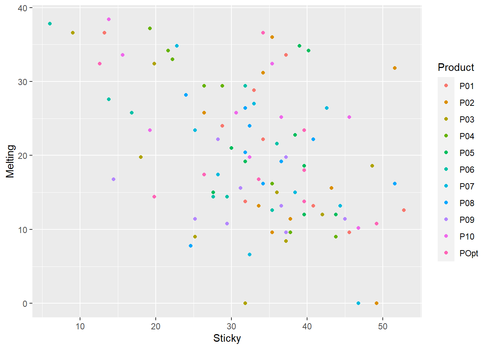
As you can see, any parameters provided within aes() may depend on a variable (e.g. colour in the previous example).
If for any reasons, a specific setting should uniformly be applied to all the elements of the graph, then it should be defined outside aes().
Let’s illustrate this by providing a simple example in which we change the type of the dots from circle to square using pch, and by increasing their size using cex:
p + geom_point(aes(x=Sticky, y=Melting, colour=Product), pch=15, cex=5)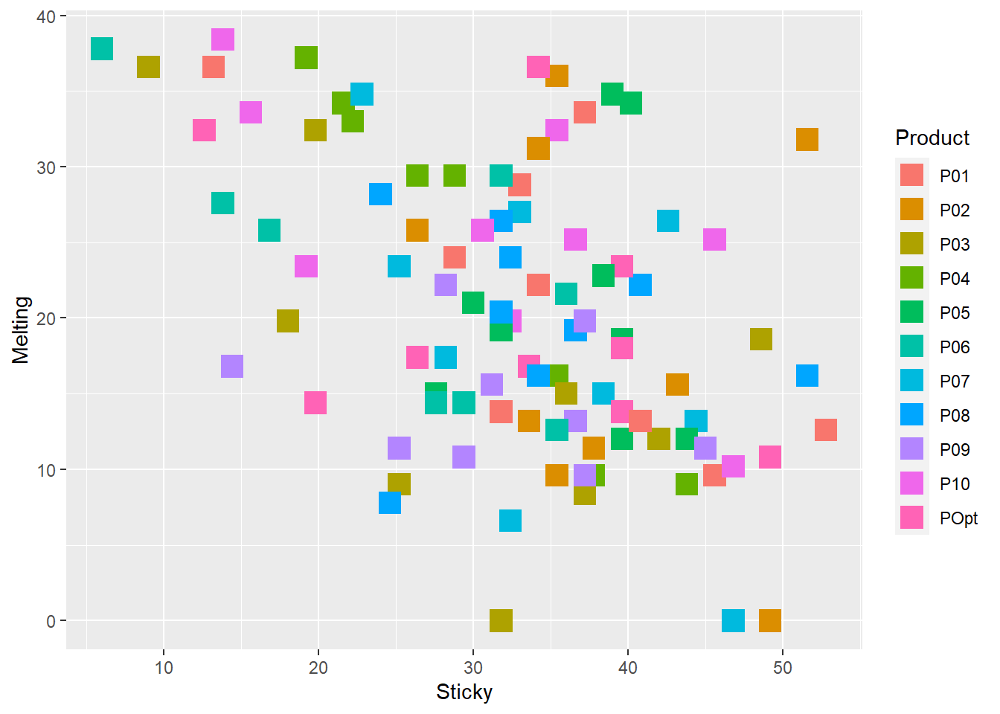
Regardless of the products, all the points are now shown as large squares.
Depending on the geom_*() function considered, different parameters should be informed within aes(). Here is a list of the most common aes() you would use:
x,y,z, provides the coordinates on the X, Y, Z dimensions respectively;colour/color,fillcontrols for the color code21 that is being applied to the different elements of a graph;groupmakes the distinction between points that belong to different groups22;text,labelprints text/labels on the graph;sizecontrols the size of the element (this should preferably be used with numerical variables).
It may not be clear yet on how those aesthetics work, but don’t worry, many examples illustrating the use of these various types of aesthetics are provided throughout the book.
5.4.2.2 Introduction to geom_*() functions
Since {ggplot2} is a multi-layer graph, let’s add another layer. For example, the name/code of the panelists associated to each point can be printed.
Such procedure is done through the use of another geom_*() function in geom_text()23 which requires in aes() the position of the labels (x and y) as well as the label itself.
To avoid having the label overlapping with the point, the text is slightly shifted vertically using nudge_y. For simplicity, let’s rebuild the graph from the start:
ggplot(sensory)+
geom_point(aes(x=Sticky, y=Melting, colour=Product))+
geom_text(aes(x=Sticky, y=Melting, label=Judge), nudge_y=1)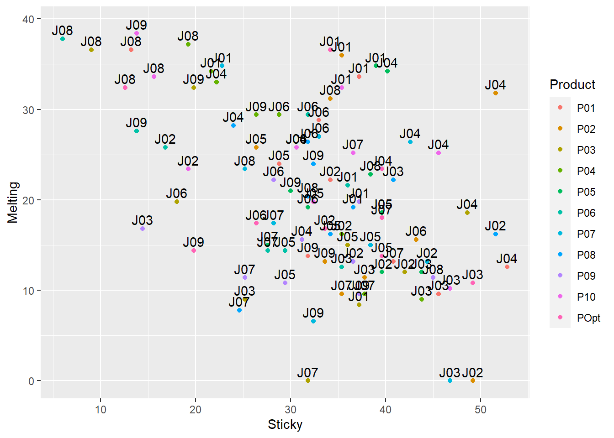
One interesting remark is that some information required in aes() is being repeated across the different geom_*() used. Such writing can be simplified by providing the aes() information that applies to all geom_*() to the original ggplot() call24. The previous code hence can be simplified to:
p <- ggplot(sensory, aes(x=Sticky, y=Melting, label=Judge))+
geom_point(aes(colour=Product))+
geom_text(nudge_y=1)
With this new code, you’ll notice that:
xandyare automatically applied to bothgeom_point()andgeom_text();- although
labelis only relevant forgeom_text(), it can still be provided at the beginning as it will be ignored bygeom_point(); colourshould only be provided withingeom_point()else the text would also be colored according toProduct(which we do not want here);nudge_yis defined outsideaes()as it applies to all the text.
Since the graphics look at the relationship between two quantitative variables, let’s add another layer to the previous graph that shows the regression line:
## Warning: The following aesthetics were dropped during
## statistical transformation: label
## ℹ This can happen when ggplot fails to infer the
## correct grouping structure in the data.
## ℹ Did you forget to specify a `group` aesthetic or to
## convert a numerical variable into a factor?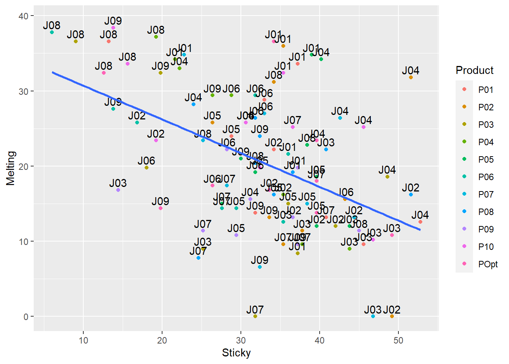
This code adds a regression line to the graphic. It is built using the lm() engine in which the simple linear regression model y~x is fitted. This result is somewhat surprising since we have not run any regression yet, meaning that geom_smooth() is performing this analysis in the background by itself.
In practice, most geom_*() function comes with a statistical procedure attached to it. This means that on the raw data, the geom_*() function calls its stat_*() function that runs the corresponding analysis. In the previous example, geom_smooth() calls stat_smooth().
Let’s illustrate this concept again using another example: bar-charts that is applied on the data stored in Nbiscuits.
Here, we want to see the distribution (through bar-charts) of the number of biscuits eaten per consumer. A quick look at the data shows that some respondents ate portions of the cookies. To simplify the analysis, let’s consider the total number of entire cookies eaten: if a respondent has eaten say 3.5 biscuits, it will be rounded down to 3 full cookies.
Nbiscuits <- Nbiscuits %>%
mutate(N = floor(N))To create such distribution, a first solution consists in counting for each product how many respondents ate 0 biscuit, 1 biscuit, 2 biscuits, etc. This is automatically done using geom_bar and stat="count". The parameter position="dodge" is used to get the results per biscuit side by side rather than stacked up vertically (value by default):
bar_p <- ggplot(Nbiscuits, aes(x=N, fill=Product))+
geom_bar(stat="count", position="dodge")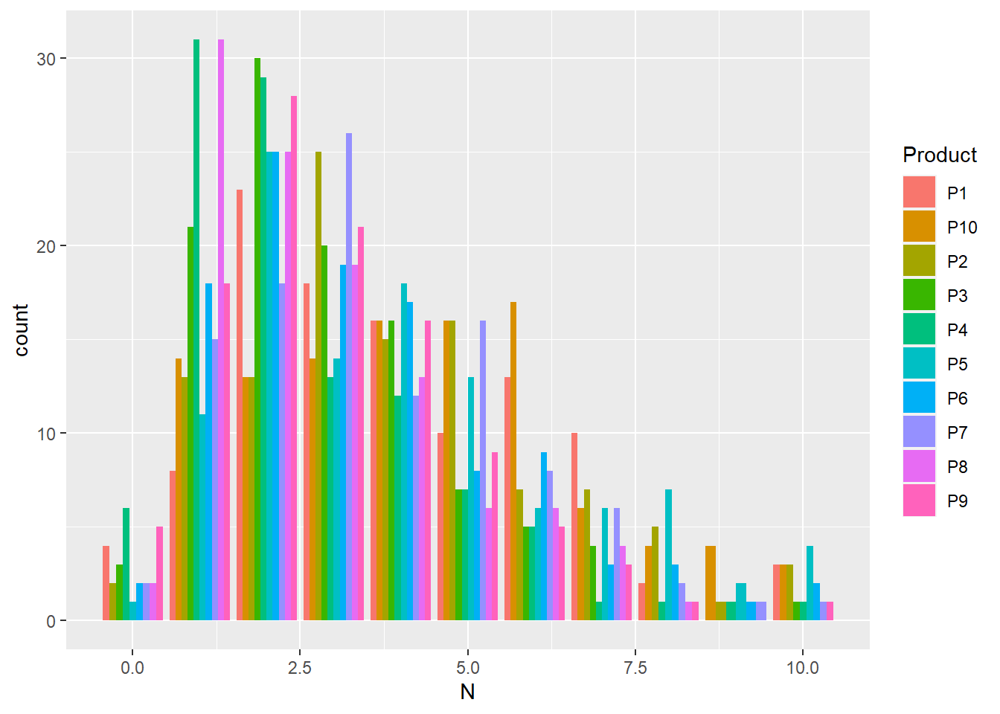
In the background, this corresponds to grouping the data by Product, summarizing the results by counting N, and then performing geom_bar() in which no transformation is required (we set stat="identity")25:
As can be seen, these two graphics are identical.
5.4.2.3 Making graphs pretty
In the two previous graphs generated (stored in line_p and bar_p), some features can be changed to produce clearer visualizations. Currently, the background is grey with vertical and horizontal white lines, the legend is positioned on the right side, the axis is defined based on the data itself (and so are the axis titles), there is no title, etc. All these points (and many more) can be modified, as it will be shown in this section.
Let’s start with a quick win by completely changing the overall appearance of the graphic. To do so, predefined themes with pre-set background (with or without lines, axis lines, etc.) can be applied. The two themes we use the most are theme_minimal() and theme_bw() (see https://ggplot2.tidyverse.org/reference/ggtheme.htmllink for a complete list of pre-defined themes.)
Let’s start with improving bar_p using theme_minimal():
bar_p <- bar_p+
theme_minimal()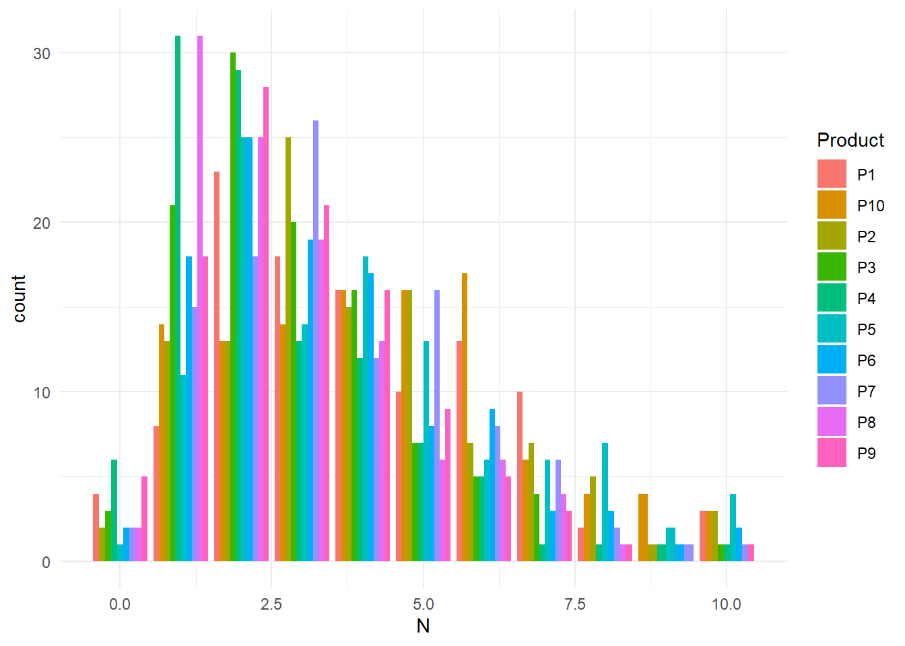
Rather than using pre-defined themes (or to complement pre-defined themes), the different parameters of the graph can be controlled through theme().
Let’s modify the axes by changing their names and by applying more logical breaks. For instance, the limits of the x-axis can be extended to -1 and 11 to ensure that all the histograms are visible, else R removes some and returns a warning: Removed 10 rows containing missing values.
bar_p <- bar_p +
scale_x_continuous(name="Number of Biscuits eaten",
breaks=seq(0,10,1),
labels=c("None", 1:9, "All of them"),
limits=c(-1,11))+
ylab("Number of Respondents")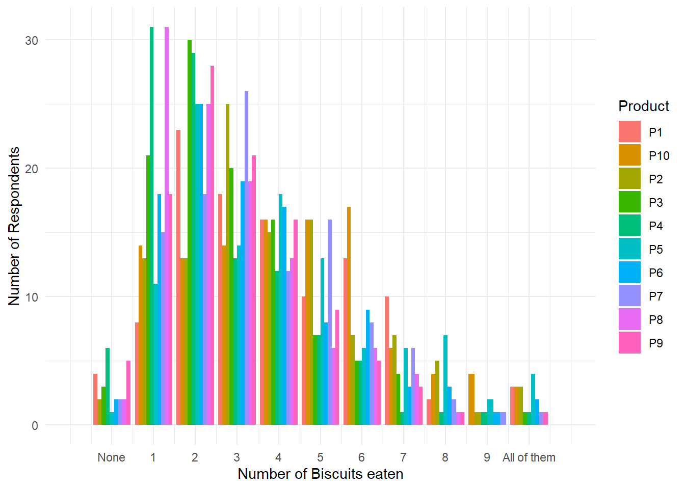
Last but not least, a title is being added to the graph using ggtitle():
bar_p <- bar_p +
ggtitle("Distribution of the number of biscuits eaten","(Results are split per biscuit type)")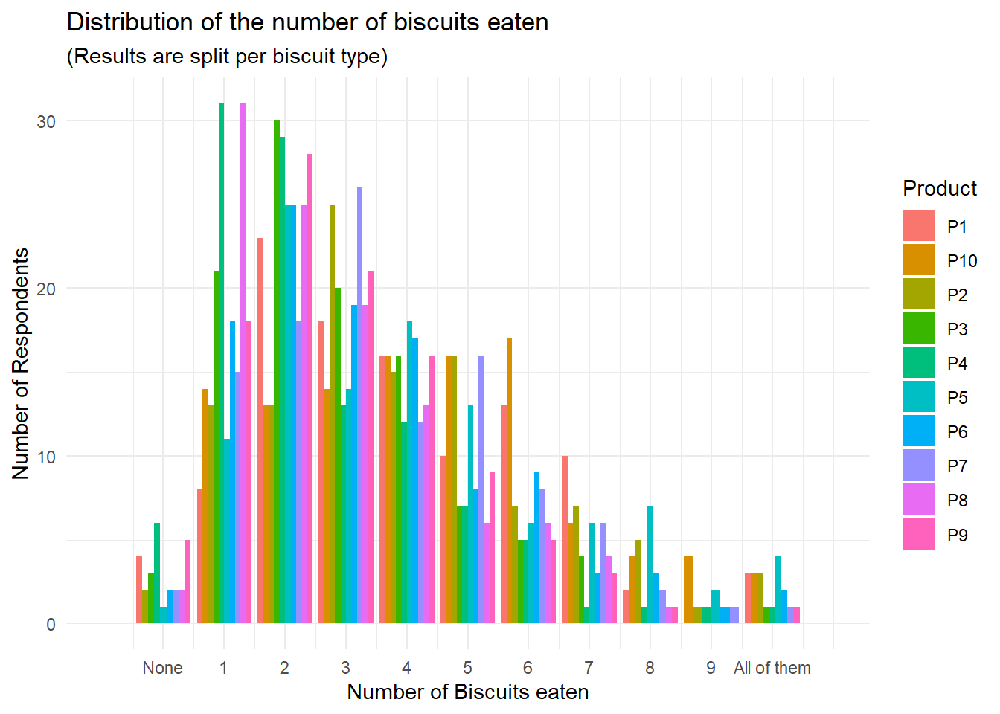
Let’s apply a similar transformation to line_p. Here, we are aiming in having a more realistic plot using cartesian coordinates, a nice theme, no legend, and a title to the graph.
line_p <- line_p +
theme_bw()+
scale_x_continuous(breaks=seq(0,50,10), limits=c(0,60))+
scale_y_continuous(breaks=seq(0,50,10), limits=c(0,60))+
coord_fixed()+
ggtitle("Relationship between Melting and Sticky", "Biscuits perceived as more sticky tend to be less melting.")+
guides(colour="none")## Warning: The following aesthetics were dropped during
## statistical transformation: label
## ℹ This can happen when ggplot fails to infer the
## correct grouping structure in the data.
## ℹ Did you forget to specify a `group` aesthetic or to
## convert a numerical variable into a factor?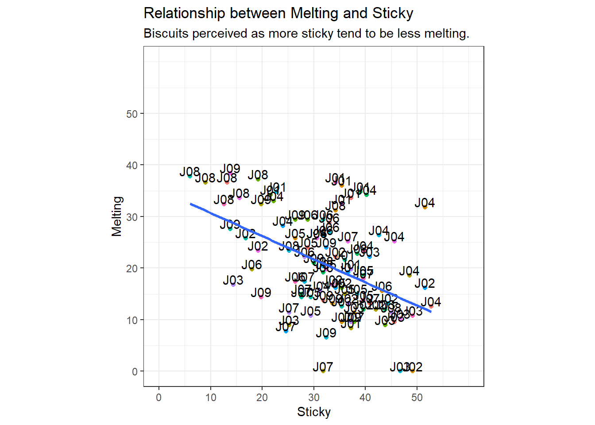
5.4.3 Common Charts
You have now an overview of the basics of {ggplot2} and its philosophy. You’ll find plenty of other examples throughout this book to help you develop your skills in building graphics in R.
Since making an exhaustive list of plots that are relevant in sensory and consumer science is out of the scope of this book, it is not going to be further developed here. Yet, here is a summary of the geom_*() that are commonly used:
- Scatter points:
geom_point(): create a scatter point (see example Section 5.4.2.1)
- Line charts:
- Bar charts:
geom_col()andgeom_bar(): produce bar-charts by either using the raw values, or by computing the frequencies first (see example Section ??);geom_histogram()andgeom_freqpoly(): work in a similar way asgeom_bar()except that it divides the x axis into bins before counting the number of observation in each bin and either represent it as bars (geom_histogram) or lines (geom_freqpoly()).
- Distribution:
geom_density(): build the density plot;geom_boxplot(): build the well-known boxplot;geom_violin(): application ofgeom_density()displayed ingeom_boxplot()fashion.
- Text and Labels:
geom_textandgeom_label: add text to the graph (see example Section 5.4.2.2);- the package
{ggrepel}provides alternative functions (geom_text_repel()andgeom_label_repel()) that re-position labels to avoid overlapping (repel stands for repulsive).
- Rectangles27:
geom_tile(),geom_rect: create area either using its center point (geom_tile()) or its four corner (geom_rect()) defined byxmin,xmax,ymin, andymax(see example…);geom_raster(): high performance alternative togeom_tile()/geom_rectwhere all the tiles have the same size.
Besides geom*(), a lot of graphical parameters can further be controlled. This includes of course the theme() and the aes():
- For pre-defined themes, see example;
axisparameters including its title (axis.title), text (axis.text), ticks (axis.ticks), line (axis.line), and all their sub-levels.legendparameters including its position (legend.position), direction (legend.direction), its text (legend.text,legend.title), the design of the box (legend.box,legend.background) etc.panelparameters including its background (panel.background), the grid lines (panel.grid), the border (panel.border), etc.plotparameters including the different titles (plot.title,plot.subtitle,plot.caption), the background (plot.backgorund), etc.
Most of these parameters can be controlled at different levels of granularity:
- overall, e.g.
panel.grid; - more detailed, e.g.
panel.grid.majorandpanel.grid.minor; - most detailed, e.g.
panel.grid.major.x,panel.grid.major.y, etc.
Depending whether the option to modify is some text, a line, or a rectangle, element_text(), element_line(), or element_rect() would be respectively used to control them. These functions provide general (e.g. color) as well as specific options (e.g. family and face for text, linetype for lines etc.) to each type.
Note that if some elements should be left blank, element_blank() can be used regardless of the nature of the element.
Let’s illustrate these concepts using our previous graph stored in line_p. Here, the goal is to remove the grid line, to replace the x and y axis lines by arrows, and to re-position the axis titles to the far end of the axis so that it is next to the arrow head.
line_p +
theme(panel.grid=element_blank(),
panel.border=element_blank(),
axis.line=element_line(arrow = arrow(ends = "last", type = "closed")),
axis.title=element_text(hjust=1))## Warning: The following aesthetics were dropped during
## statistical transformation: label
## ℹ This can happen when ggplot fails to infer the
## correct grouping structure in the data.
## ℹ Did you forget to specify a `group` aesthetic or to
## convert a numerical variable into a factor?
Similarly to the theme, aesthetics can also be adjusted. In previous examples, the x-axis in bar_p was adjusted by setting limits, providing breaks and replacing the values by certain labels using scale_x_continuous().
Most aesthetics parameters can be controlled by equivalent functions for which the name is using the following structure scale_*nameaes*_*typescale*, and where:
- nameaes corresponds to any aesthetics including
x,y,colourorfill,alpha, etc. - typescale corresponds to the type of scale, where it is
continuous,discrete, ormanual(amongst others).
Such functions fully control how the corresponding aesthetic should behave, by providing the correspondence between a variable level and (say) its color.
In the graph saved in bar_p, remember that we filled in the bar chart using the product information. Let’s imagine that we are particularly interested in biscuit P3, and want to compare it to the rest of the biscuits. We propose to make P3 stand out by filling it in orange, and by setting all the other biscuits in the same gray tone.
Such procedure can be done using scale_fill_manual().

When multiple aesthetics are being used, the legend might become overwhelming or redundant. It is possible to turn off some of these visuals within the scale_*() functions, or by using guides() and by setting nameaes='none' as shown in the line_p example.
5.4.4 Miscealleneous
5.4.4.1 Structuring the axis
By default, ggplot() generates plot that fits the data and that fits within the output screen. This means that some graphics might not be perfectly representing the data due to some distortion. In a previous example (line_p), the dimensions were made comparable through coord_fixed().
Other transformation can be performed. For instance, the graphic can be transposed using coord_flip() as in the following example:
bar_p + coord_flip()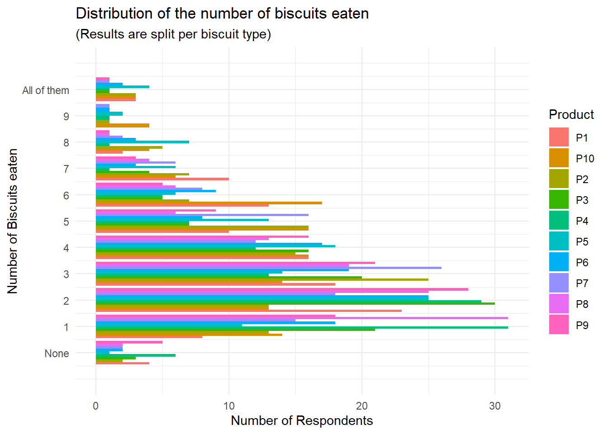
5.4.4.2 Summary through an example: Spider Plots
To conclude this section, and summarize most concepts presented in this chapter, let’s introduce the well-known spider plots. The use of such plots are quite polarizing amongst analysts and the reason of this choice here is purely educational, as 1. there are no pre-defined options in {ggplot2} that provides such charts, and 2. they present some interesting challenges.
Let’s start with deconstructing a spider-plot: a spider plot is a line chart presented in a circular way. So let’s start with building a line chart of our sensory profiles (the means are considered here). For more clarity, only two of the samples (P03 and POpt) are represented.
sensory_mean <- sensory %>%
pivot_longer(Shiny:Melting, names_to="Variables", values_to="Scores") %>%
mutate(Variables = fct_inorder(Variables)) %>%
group_by(Product, Variables) %>%
summarize(Mean = mean(Scores)) %>%
ungroup() %>%
filter(Product %in% c("P03", "POpt"))## `summarise()` has grouped output by 'Product'. You can
## override using the `.groups` argument.spider_line <- ggplot(sensory_mean, aes(x=Variables, y=Mean, colour=Product, linetype=Product))+
geom_point(pch=20, cex=3)+
geom_line(aes(group=Product), lwd=1)+
theme_minimal()+
xlab("")+
scale_y_continuous(name="", labels=NULL, limits=c(0,50))+
scale_colour_manual(values=c("P03"="darkorange", "POpt"="grey50"))+
scale_linetype_manual(values=c("P03"="solid", "POpt"="dashed"))## Warning: Using `size` aesthetic for lines was deprecated in
## ggplot2 3.4.0.
## ℹ Please use `linewidth` instead.Next step is to represent this line chart in a circular way. This can be done using coord_polar():
spider_line + coord_polar()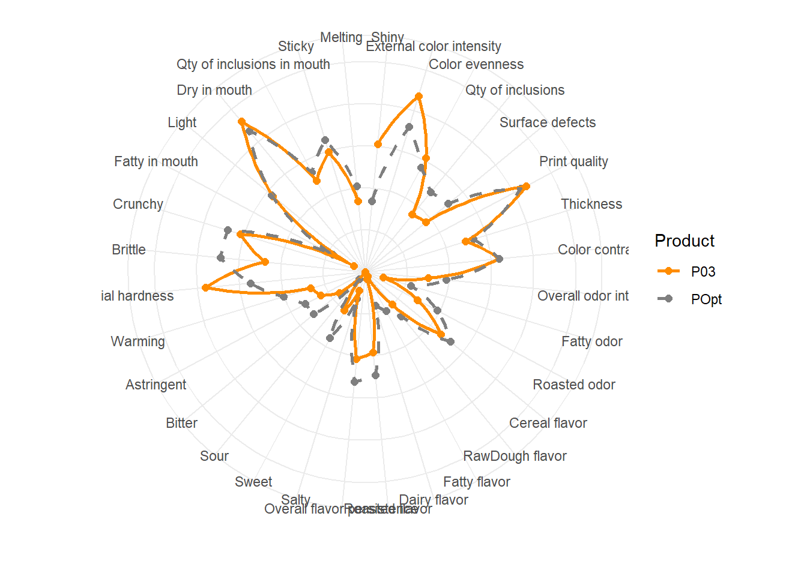
This already looks like a spider plot! However, a closer look at it highlights a point that needs improvement: There is no connection between the last attribute (Melting) and the first one (Shiny).
To counter this, the following twofold solution is proposed:
- Associate each attribute to its position (e.g.
Shinyis 1,External color intensityis 2, untilMeltingwhich would be 32); - Duplicate the last attribute (
Melting) and associate it to position 0.
var <- levels(sensory_mean$Variables)
sensory_mean_pos <- tibble(Variables = c(var[length(var)], var),
Position = 0:length(var)) %>%
full_join(sensory_mean, var_pos, by="Variables")The previous graph is then rebuilt by forcing the position of the attributes on the x-axis using Position (Variables is used for the labels). Here position 0 is voluntarily omitted (breaks = 1:length(var) and labels = var), meaning that only the labels going from 1 to the last variable are being showed. However, the x-axis is forced to go from 0 to the number of attributes (limits = c(0, length(var))).
spider_plot <- ggplot(sensory_mean_pos, aes(x=Position, y=Mean, colour=Product, linetype=Product))+
geom_point(pch=20, cex=2)+
geom_line(aes(group=Product), lwd=1)+
theme_minimal()+
scale_x_continuous(name="", breaks=1:length(var), labels=var, limits=c(0,length(var)))+
scale_y_continuous(name="", labels=NULL, limits=c(0,50))+
scale_colour_manual(values=c("P03"="darkorange", "POpt"="grey50"))+
scale_linetype_manual(values=c("P03"="solid", "POpt"="dashed"))+
coord_polar()+
theme(legend.position = "bottom", legend.title = element_blank())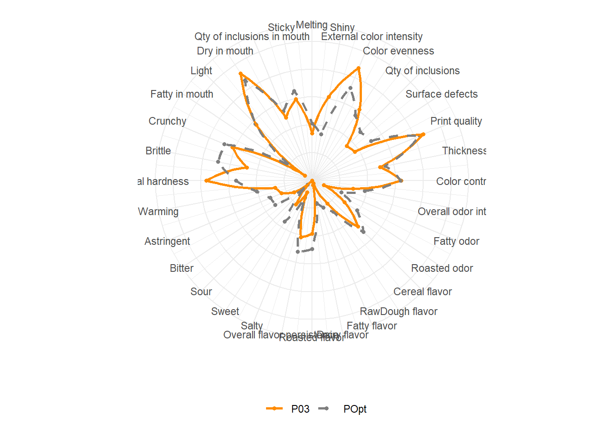
By using this trick, the connection between the first and last attributes is established.
5.4.4.3 Combining plots
When multiple plots should be generated using the same pattern on subset of data, it is possible to generate them automatically using facet_wrap() or facet_grid(). The difference between these two functions rely in the number of variables to use for the split: In facet_wrap(), the graphics are vectorized, meaning that each element of the split is represented independently. For facet_grid() however, the graphics is represented in a matrix, meaning that two blocks of split variables are required, one for the columns and one for the rows.
An example of facet_wrap() is provided in Section (REF DATA ANALYSIS).
For these two functions, the parameter scales is particularly interesting as it allows each separate graph to use its own axis scales (free or individually using free_x/free_y) or not (fixed).
To go further, consider also the function facet_trelliscope() from the {trelliscopejs} package. This function generates the same type of graphs as facet_wrap() or facet_grid() with some powerful twists. After generating the plots, they are still editable thanks to an interactive menu that controls for the Grid, Labels, Filter, and Sort. For example, the number of plots to show per row/column can be adjusted, tables with descriptive statistics (e.g. mean, minimum, maximum) can be added under each graph, etc. Moreover, readers that are familiar with the interactivity of {plotly} can make great use of it through the as_plotly = TRUE parameter, which is then applied to each individual graph!
Such procedure is very handy to produce multiple graphs all at once…when the data allow it.
When multiple plot are being generated separately (using different data set, or producing different types of plots), it can still be relevant to combine them all in one. To perform such collage, the package {patchwork} becomes handy.
{patchwork} is a package that allows combining ggplot() graphs using mathematical operations. To add two elements next to each others, the + sign is used. To add two elements on top of each others, they should be separated using /. This operation can be combined with () to generate fancier collage.
Let’s illustrate this by creating a plot with on the left side spider_plot, and on the right side bar_p on top of line_p.
library(patchwork)
p <- spider_plot + (bar_p / line_p)## Warning: The following aesthetics were dropped during
## statistical transformation: label
## ℹ This can happen when ggplot fails to infer the
## correct grouping structure in the data.
## ℹ Did you forget to specify a `group` aesthetic or to
## convert a numerical variable into a factor?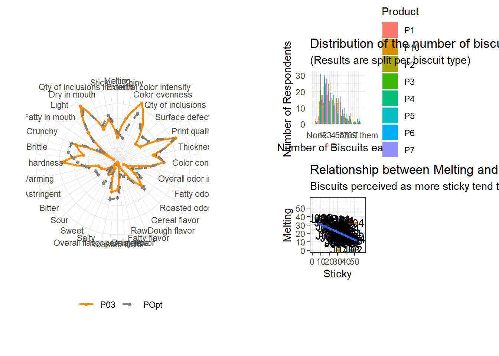
A general title can be added, as well as tag levels (handy for publications!) using plot_annotation().
p + plot_annotation(title = "Example of 'ggplots' I've learned today", tag_levels='a')5.4.5 Few Additional Tips and Tricks
5.4.5.1 Combining data transformation and {ggplot2} grammar
Both the {tidyverse} and {ggplot2} are using pipes to combine lines of code or layers.
However, the pipes themselves are defined differently since {maggritr} uses %>% whereas {ggplot2} uses +.
It is however possible to combine both systems one after each other, just remember to switch from %>% to + as you transition from data transformation/tidying to building your graph (see Section REF).
5.4.5.2 Ordering elements in a plot
When building a graph using a categorical variables, {ggplot2} tends to represent the different levels in alphabetical order, especially if the variable is defined as character. Such situation can make the graph more difficult to read, as the categories may not be presented in a logical order (e.g. fall, spring, summer, winter instead of spring, summer, fall, winter). To ensure that the elements are in the right order, either consider transforming the variables into factor (using factor() by indicating the levels order of your choice, or through fct_inorder() to keep the order from the file, see Section REF) or by using a position variable as in the spider_plot example. The former option also works for ordering elements in the legend.
If the order of the elements should be changed within the charts (simple changes such as reverting the order), it can be done directly within the geom_*() function. This is for instance the case with stacked bar chart, in which the order may be reverted using the parameter position = position_fill(reverse = TRUE) for instance (suggesting here that the split was defined through fill in aes()).
5.4.5.3 Fixing overlapping axis text
When ggplot() are being built using categorical variables, the labels used on the x-axis are often overlapping (some of the labels being then unreadable). A first good/easy solution consists in reducing the size of the label, and/or to shortening them as long as it does not affect its readability. However, this might not always be possible or sufficient, and other adjustments are required. Let’s use spider_line as illustration to show three possible solutions.
The first option consists in using theme() and rotating the labels (here at 45 degrees, but use 90 degrees to get the names vertically). Note that by default, ggplot() center the labels: to avoid having them crossing the x-axis line, they are being left-centered using hjust=1:
spider_line +
theme(axis.text.x = element_text(angle=45, hjust=1))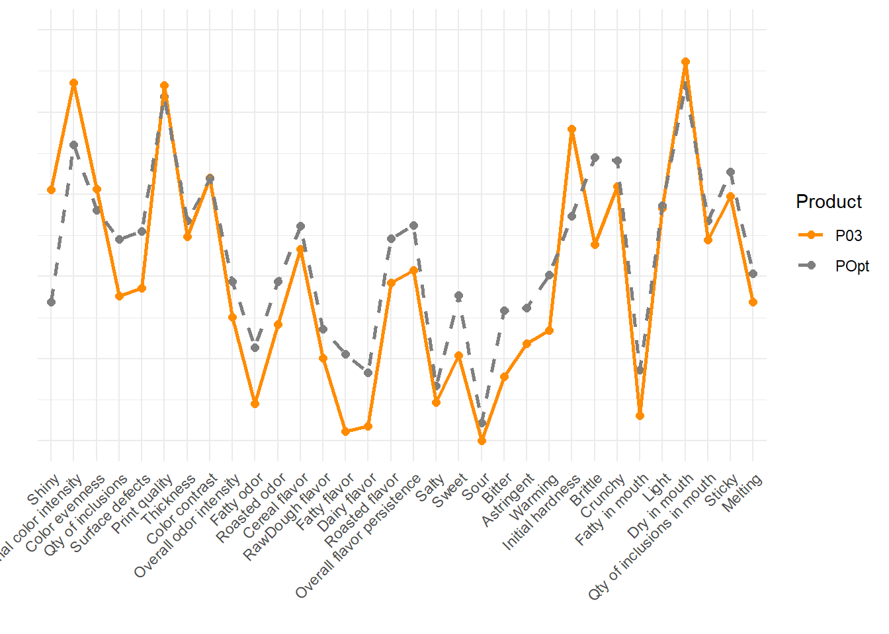
A second option consists in dodging one every two labels along the X-axis. This option works fine, especially when the labels are not too long. In our example unfortunately, some overlap can still be seen. Note that this option is accessible within scale_x_discrete(), not within theme() as we would expect:
spider_line +
scale_x_discrete(guide = guide_axis(n.dodge = 2))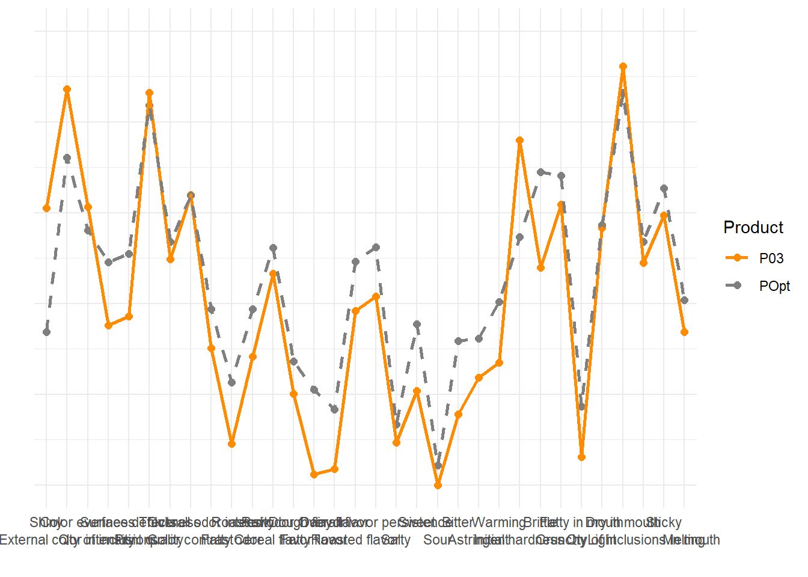
Last option consists in transposing the graph using coord_flip(). This solution works well since labels on the y-axis are written horizontally. However, this option is not always suitable due to conventions: if it is recommended for bar charts, it may not be for line charts for instance.
5.4.5.4 Exporting graphs
There are various ways to save or export ggplot() charts. To save these plots to your computer in various formats (e.g. png, pdf, etc.), ggsave() is used. By default, ggsave() exports the last plot built and saves it in the location defined by filename, in the format defined by device (additional information regarding the width, height, dpi etc. can also be configured).
For instance, the spiderplot generated earlier28 can be saved as following:
ggsave(filename="spiderplot.png", plot=spiderplot, device="png")As an alternative, ggplot() graphs can also be exported in PowerPoint or Word through the {rvg} package (see Section REF).
5.4.5.5 Additional libraries
{ggplot2} is a very powerful tool for data visualization. By default, it offers a very large variety of possibilities, which should cover most situations that you would encounter. If not, a quick internet search will most likely find extensions in alternative packages that wil provide you with solutions.
To help you further, here is a non-exhaustive list of relevant packages:
{ggcharts}: This package provides nice and clear alternatives to some{ggplot2}options through simple functions in one line of code, includingbar_chart(),line_chart(),lollipop_chart()anddumbbell_chart()just to name a few.{graffify}: This package extends{ggplot2}by providing nice and easy functions to help data visualization and linear models for ANOVA. For example, it generates through one function bar chart with error bars throughplot_scatterbar_sd(), or simultaneous box-plot and scatter plot throughplot_scatterbox().{factoextra}: Although{FactoMineR}generates its graphs in{ggplot2}and in base R,{factoextra}is a great extension as it is easy to use and provides a wide variety of options to customize your plots.{ggcorrplot}: There are many packages that propose to visualize graphically tables of correlations, however we particularly like this one for its simplicity.{ggwordcloud}: It is a great package for building word-clouds as it provides a large degree of control. With this package, the words can either be positioned randomly, by matching a pre-defined shape, etc. But more interestingly, words can also be positioned semi-randomly, hence giving more interpretation power to the final results (for more information, please visit https://lepennec.github.io/ggwordcloud/link).{ggraph}: This package provides neat solutions to build network visualization in{ggplot2}.{performance}: This package provides pre-defined graphs that allow you evaluating the quality of your models through the singlecheck_model()function. See also{ggside}if you want to print on the margin of your regression plot the marginal distributions (or density plot) of your different categories.
To learn more about {ggplot2} basics, we recommend two additional source of information:
{esquisse}: After loading the package, run the functionesquisser(). This command opens a window in which you can select your data set (the data set should be available within you R environment), the type of plot to build, and all the relevant information to build your plot (which variable to be used as X-axis, Y-axis, etc.) through an user-friendly interface. Ultimately, the graph is being generated, but more importantly, the code used to generate the plot is provided. This is hence an educational tool to learn build graphs with{ggplot2}.- https://www.data-to-viz.com/link provides a wide gallery of graphics sorted by the type of data that you have. Each graphic proposed is illustrated with an example provided in R (often in
{ggplot2}) and in Python. This website is hence inspirational and educational both at the same time!
More information regarding the
{officer}package are provided in Section REF↩︎You can also use
alphato control for the transparency of the elements by defining values between 0 (completely transparent) to 1 (no transparency).↩︎Note that
colourandfillare specific cases of groups as they additionally provide a visual cue on the groups through the color code↩︎Try using
geom_label()instead ofgeom_text()to see the difference between these two.↩︎Intrinsically, this is what is done with
sensorywhich is only mentioned withinggplot()and is not repeated across the differentgeom_*()functions.↩︎This code could even be simplified by using
geom_col()which corresponds togeom_bar()withstat="identity"as default.↩︎This function can also be used to draw arrows through the parameter
arrowand the function of that same namearrow().↩︎In Sensory and Consumer science, this will often be used for building surface plot responses (e.g. external preference map), and hence is associated to
geom_contour()to show the different lines.↩︎Since
spiderplotis not the last plot generated, it needs to be defined inplot.↩︎